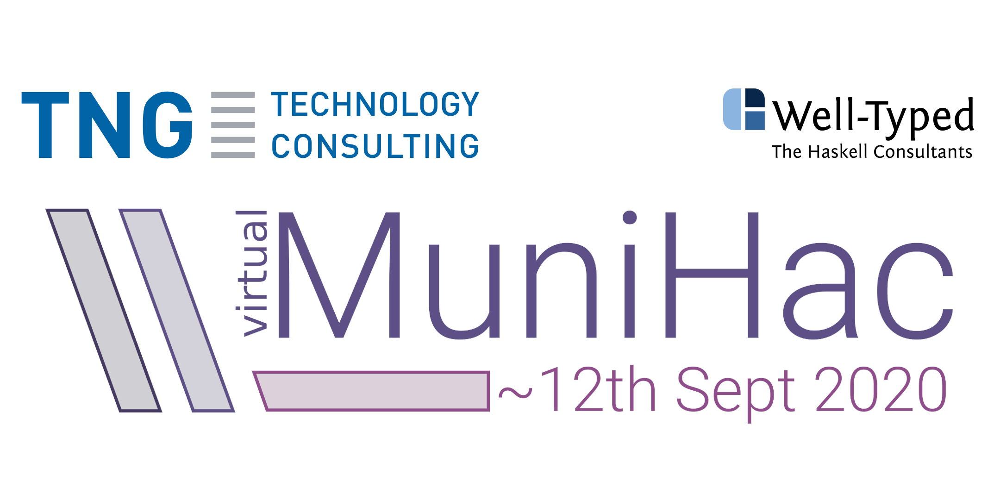

Virtual MuniHac 2020
MuniHac is a Haskell hackathon in the tradition of other Haskell Hackathons such as the ZuriHac, HacBerlin, UHac and many others. MuniHac is hosted and sponsored by TNG Technology Consulting GmbH and co-organized by Well-Typed LLP, and usually takes place in the beautiful city of Munich.
This year due to the ongoing Corona situation, MuniHac will take place as a two-day online event filled with Haskell talks and workshops that will be streamed via the internet, as well as the opportunity for hacking sessions. MuniHac is free to attend.
Registration
Registration for MuniHac 2020 is open: https://registration.munihac.de/register
Projects
Although the focus this year is more on workshops and talks, MuniHac would not be a proper Haskell hackathon without some hacking sessions. We've reserved a few Zoom rooms for you to get together and hack on projects, so if you want to host a project at MuniHac 2020, just get in touch with us at munihac@tngtech.com! We'll create a Zoom session and slack channel for you, and publish them so people can join you for your project.
Programme
MuniHac 2020 will take place remotely on Friday, September 11 and Saturday, September 12, 2020. We will open on Friday 11:30 CEST for two days and three tracks of Haskell-related workshops and talks. See the list of confirmed speakers and the information for participants! And if you're here just to connect with other Haskellers or hack on projects, we'll have you covered as well.
Friday, September 11
| Time | Type | Track 1 | Track 2 | Track 3 |
|---|---|---|---|---|
| 11:30 | Opening | |||
| 12:00–13:00 | Talks | Migrating HLint to the GHC API Neil Mitchell |
Theorems for Free Lars Hupel |
Persistence makes a Difference Nicolas Wu |
| 14:00–15:00 | Talks | This ain't your Daddy's Probability Monad Lars Brünjes |
The new Windows I/O manager (WinIO) in GHC Tamar Christina |
Being lazy without being bloated Edsko de Vries |
| 15:30–18:30 | Workshops | Miso: Haskell in the front-end Alejandro Serrano |
Liquid Haskell Andres Löh |
Beginners Workshop David Luposchainsky |
| 19:00–20:00 | Talks | Exploring Parsley Jamie Willis |
An Introduction to Applied Category Theory Johannes Drever |
Contravariant logging: How to add logging without getting
grumpy Duncan Coutts |
| 20:00 | Get-Together | |||
Saturday, September 12

{kind=link}
{kind=link}
{kind=link}
{kind=link}
MuniHac 2020 Speakers
Miso: Haskell in the front-end
Alejandro Serrano
Type checking and inference lies at the bottom of our compilers, and we routinely interact with it using type signatures and reading error messages. But how does it work? In this workshop the goal is to implement a minimal type checker and elaborator for (part of) the Haskell language. Depending on the time, we would talk about simple terms, generalization, constructors, type classes, and (G)ADTs.
Liquid Haskell
Andres Löh
Liquid Haskell is an extension to Haskell that adds refinement types to the language, which are then checked via an external theorem prover such as z3. With refinement types, one can express many interesting properties of programs that are normally out of reach of Haskell's type system or only achievable via quite substantial encoding efforts and advanced type system constructs. On the other hand, the overhead for checking refinement types is often rather small, because the external solver is quite powerful.
Liquid Haskell used to be an external, standalone executable, but is now available as a GHC plugin, making it much more convenient to use.
In this tutorial, we'll discuss how refinement types work, give many examples of their use and learn how to work with Liquid Haskell productively.
Good familiarity with Haskell basics is useful. However, no knowledge of type system language extensions or type-level programming is required.
Hasktorch: A Haskell library for tensor math and differentiable functional programming
Austin Huang
Optimization over function composition is the unifying feature of machine learning using neural networks. Training neural networks utilizes differentiable layers, where layers implement pure functions. Higher order functions such as differentiation, jit optimization, distillation, hyperparameter optimization, are used in the process of building neural networks. Thus, neural networks can be considered to be "differentiable functional programming".
Despite this, popular neural networks frameworks today are implemented in an imperative programming language context. The goal of Hasktorch is to advance the use of typed functional programming for machine learning. Hasktorch is a library for tensor math and differentiable programming in Haskell. It shares the backend C++ libtorch library used by PyTorch and serves three primary objectives:
- Research on new functional programming methodology for developing and representing models that are more productive or lead to algorithm innovations.
- Building machine learning systems that are more reliable for the model and its integration with the software in which the model is embedded.
- Dissemination of new ideas from typed pure functional programming for machine learning to other languages and machine learning ecosystems.
Building a RISC-V SoC with Haskell and Python
Christiaan Baaij
Haskell and Python, languages that probably do not spring to mind when you think of languages that let you get down to the “Bare Metal” of your computer… But they can be used to (and are used to!) create that Bare Metal!
During this workshop you will learn how to create digital circuits using Haskell and Python, and about the tools needed to put those circuits on an FPGA, specialized chips that can be reconfigured into any digital logic circuit. Specifically, you are going to specify a RISC-V CPU in Haskell, and then run some small assembly programs on your RISC-V CPU inside of GHCi. Afterward, you will use “Clash”, a Haskell-to-Verilog compiler, to create Verilog from the Haskell description, a hardware description language which is understood by the FPGA tools. You will then package up the generated Verilog into a Python package to move to the next steps: Migen and LiteX.
LiteX is a System-on-Chip (SoC) builder made with the Python-based eDSL for circuit design called Migen. Using LiteX, you will connect the RISC-V CPU that you made in Haskell, to memories from which it will fetch its programs, and a UART to allow it to communicate with the outside world. You will then use Migen to transform the entire SoC to Verilog. You will then use the high-speed Verilog simulator (actually Verilog-to-C++ compiler) called Verilator to run some C-programs on your SoC and interact with it over a virtual UART.
Finally, the workshop mentor will demonstrate the use of the FPGA tools to create a bitstream, the configuration file the FPGA uses to reconfigure itself into the desired digital logic circuit. He will then upload the configuration to a FPGA development board and demonstrate you can interact with the SoC in the same way as you did in the Verilator simulation.
Contravariant logging: How to add logging without getting grumpy
Duncan Coutts
Logging usually makes me grumpy. It tends to clutter code and adds unnecessary dependencies. It's just not beautiful.
I want to share the good news that there is an approach to logging that does not make me grumpy, and I have used it in a large project where it has worked out well. It is a a relatively new approach based on contravariant functors, that avoids cluttering the code, has a simple general interface that minimises concrete dependencies and still allows a choice of logging backend.
This talk will cover the problems with logging libraries, how contravariant logging improves things and how to apply contravariant logging in your project, with your choice of logging backend.
Being lazy without being bloated
Edsko de Vries
Laziness is one of Haskell's most distinctive features. It is one of the two features of functional programming that "Why Functional Programming Matters" identifies as key to modularity, but it is also one of the most frequently cited features of Haskell that programmers would perhaps like to change. One reason for this ambivalence is that laziness can give rise to space leaks, which can sometimes be fiendishly difficult to debug. In this talk we will present a new library called `nothunks` which can be used to test for the absence of unexpected thunks in long-lived data; when an unexpected thunk is found, a "stack trace" is returned identifying precisely where the thunk is ("the second coordinate of a pair in a map in a list in type `T`"). In combination with QuickCheck, this can be used to test that an API does not create any thunks when it shouldn't and thunks that _are_ created are easily identified and fixed. Whilst it doesn't of course fix _all_ space leaks, it can help avoid a significant proportion of space leaks due to excessive laziness.
Exploring Parsley: Working with Staged Selective Parsers
Jamie Willis
Parser combinator libraries are a popular approach to writing parsers in the functional world. In particular, monadic parser combinators take centre stage. But when performance of these parser combinators become a concern, then monads prevent us from analysing and optimising our parsers effectively. Selective functors give a ray of hope to the combinator world by generating a purely static structure eligable for analysis and staging, yielding high-performance parsers. This talk will focus on how working with Parsley is different to working with a normal monadic parser combinator library as well as touching on what makes it tick.
An Introduction to Applied Category Theory
Johannes Drever
Originating in abstract mathematics, category theory bridges different mathematical areas. However, it recently also showed potential for a wide range of practical applications. In the functional programming community applications of functors, monads and monoids have been well known for a long time.
In this talk Johannes will present recent developments in applied category theory. He will give a detailed example of the categorical view on databases. Specifically, how database mappings may be expressed as functors and how data migration functors follow naturally from the categorical framework. A demonstration of the categorical query language CQL will illustrate functorial data migrations on a concrete example.
This ain't your Daddy's Probability Monad
Lars Brünjes
It is well known that (discrete) probability distributions can be implemented as monads in Haskell in various more or less sophisticated ways.
Things become more complicated when you consider processes that can take a probabilistic amount of time or even fail with a certain probability. How do such processes compose sequentially or in parallel?
An example of this is sending a message in a network. Transmission time follows a (continuous) probability distribution, and it is even possible that the message will never reach its receiver.
In this presentation, Lars will extend the standard notion of probability monad to include a notion of probabilistic duration, which will enable you to model things like communication in a network of nodes. Lars will answer questions like: "How long will it take a signal to reach each node in the network?" and "How does the answer depend on network topology?"
Control your effects
Michael Sperber
Functional programming is all about not using effects. Particularly in Haskell. Well, it turns out we sometimes do want to program with effects. When that happens, we keep them under control. With monads. Right? Unfortunately, monads compose quite poorly in Haskell, and when they do, using them is often awkward. The result is that much Haskell code takes a dive into the IO monad when really it should not. This tutorial is if you're still willing to fight this disturbing trend.
Strangely enough, with monads in Haskell past their 25th anniversary, this problem is only lately getting the attention it deserves. As a result, we have a handful of patterns and a quickly growing collection of effects libraries. Should you jump on one of those bandwagons or plod on with trusty old monad transformers? This workshop will help you out!
Let's write a Haskell Language Server plugin
Pepe Iborra
In this workshop we will add a code lens over every implicit import statement, showing the names actually imported from the module. Along the way we will learn about the HLS plugin model, how it relates to ghcide, and how to build and test our plugin.
Partial Type Constructors
Richard Eisenberg
When we describe the type `Set a`, we say that this type makes sense for any `a`. But this is a small lie: it really only makes sense for types `a` that have an ordering -- that is, types for which `Ord a` holds. This small lie has far-reaching consequences. It means that we cannot write a `Functor` instance for `Set`, it means we might accidentally write uncallable functions that take a `Set (Int -> Int)`, and it means we must repetitively write `Ord a => ...` constraints on every function working with Sets.
This talk will explore the possibility of explicitly *partial* type constructors, where we can declare loudly that types like `Set` work only with some type arguments, but not others. The design proposed improves error messages, simplifies type signatures, and allows instances like `Functor` over `Set`s.
The new Windows I/O manager (WinIO) in GHC
Tamar Christina
GHC has a new Windows I/O manager that allows for native support for I/O on Windows. The new I/O manager covers everything from Files to Pipes and Sockets in a completely asynchronous manner while providing as much information to the Haskell runtime such that useful work can still be done while blocked on I/O. The new I/O manager allows for significantly better Windows support and gives a path forward to a more stable and faster compiler.
Introduction to Opaleye
Tom Ellis
This workshop will introduce Opaleye, a Haskell embedded domain specific language for writing PostgreSQL queries. In the workshop you will learn how to write type safe and composable code for querying and modifying a Postgres database. It will require basic familiarity with writing Haskell code but will otherwise be suitable for beginners.
Participant Info
Communication Channels
- Zoom: All talks and workshops will be held via zoom.us, so installing a client or making otherwise sure that you can join Zoom calls is a good idea.
- Youtube: Additionally, all talks will be streamed on Youtube.
- Slack: We're going to use Slack for questions and discussion on the individual talks and workshops, as well as for connecting with other MuniHac participants.
There'll be an overview over all Zoom conferences, Youtube streams and Slack channels on the day of the conference.
If you haven't yet, register for Slack at https://join.slack.com/t/munihac/shared_invite/zt-gaq3veyb-u3j9F0LqN0Q60Zc2MVqvSw and join the #munihac-2020 channel, where you can meet up with other guests.
Other years
Contact
You can reach the organizers via email: munihac@tngtech.com.